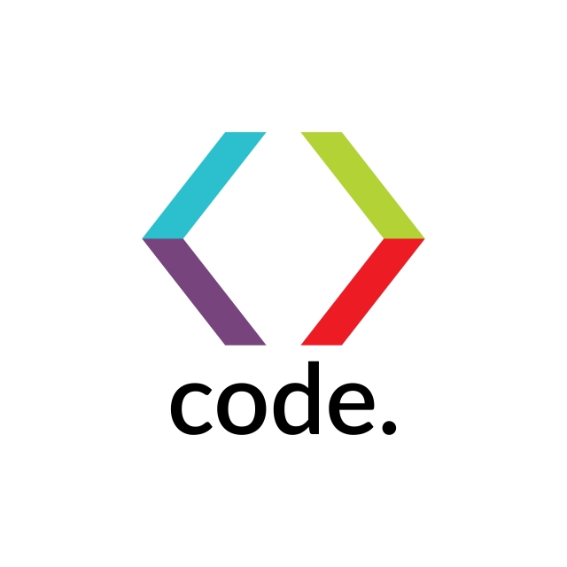
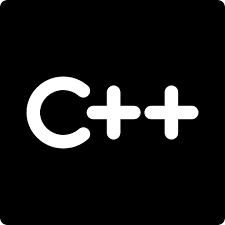

Welcome!
PROGRAMMING
Programarea nu a devenit populară din întâmplare. În prezent, învățatul tradițional a ajuns mai puțin relevant într-o lume în care Google poate răspunde oricărei întrebări în câteva secunde.
Tot mai multă lume recunoaște că programarea este esențială, în special pentru generațiile mai tinere.
În cazul în care nu știai, întreaga lume funcționează cu ajutorul codurilor. Uită-te în jur!
|  |
 |
 |
Code,code,code
Computerele nu au minți proprii, ele pot acționa numai prin intermediul informațiilor programate. Nu există industrie sau activitate socială neatinsă de cod.
Cultura noastră este reprezentată și reflectată prin cod. Normele noastre sociale se reflectă prin cod. Lumea pe care dorim să o creăm este construită cu ajutorul codurilor.
Gândește-te cât de avantajos este pentru copilul tău și viitorul său să învețe să programeze – ar putea schimba lumea!